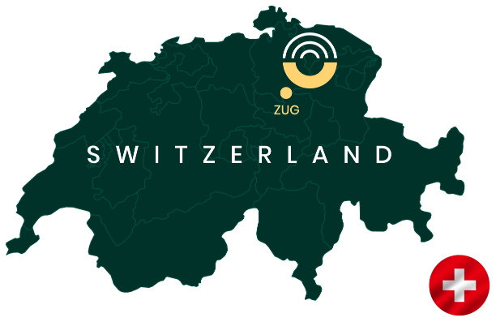
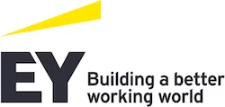
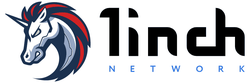
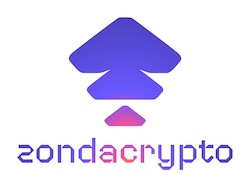

Агентные расследования для on-chain экономики
Будущее финансов — токенизировано. Будущее расследований — агентное. Мы работаем на их пересечении.
Будущее финансов — токенизировано. Будущее расследований — агентное. Мы работаем на их пересечении.
Компания Recoveris имеет главный офис в Цуге, Швейцария, в самом сердце Криптовалютной долины. Нейтральная юрисдикция Швейцарии обеспечивает безопасную и стабильную среду, что крайне важно для чувствительного характера нашей работы. Как и наши клиенты, мы ценим работу в атмосфере доверия и стабильности. Точность и надежность заложены в нашей ДНК, и мы подходим к каждому делу с острым вниманием и тщательной заботой — качествами, синонимичными самой Швейцарии.


Регулируемый швейцарский частный банк нуждался в обоснованной документации по ПОД/ФТ для состоятельного клиента с сложным происхождением богатства в блокчейне. EY и Recoveris совместно подготовили структурированный файл соответствия, разработанный так, чтобы пройти проверку регулятора с первой подачи.
Читать полное делоЗадача: Регулируемый частный банк получает заявку на подключение от клиента с высоким уровнем капитала, чье состояние произошло от ранних позиций в криптовалюте и активного участия в DeFi. Традиционные рамки AML и источников финансирования не могут ответить на два вопроса, которые ожидает каждый регулятор при подключении цифровых активов: откуда поступили средства и кто фактически контролирует их сегодня. Создание этой возможности внутри компании занимает годы, и одна заявка на подключение этого не оправдывает. Банк привлекает предложение EY DLA, совместно предоставляемое EY Switzerland Managed Услуги Financial Услуги и Recoveris.
Наш подход: EY DLA combines three disciplines into one defensible compliance file. DLI (Distributed Ledger Разведка) reconstructs the client’s on-chain wealth history and traces transactions back to documented origins. CODA (Control Over Digital Assets) verifies, through structured signing exercises and on-chain attestations, that the declared wallets are under the client’s exclusive control. AML risk scoring maps every historical counterparty interaction to PASS / FLAG / BLOCK outcomes against the bank’s risk policy. EY leads client and risk-committee interface and governance documentation; Recoveris executes the forensic work.
Результат: The bank receives a single structured DLA file – DLI source-of-funds report with management summary, CODA verification record, and AML risk-scoring overview – cross-referenced and aligned to its internal policy framework. Cleared wealth is supported with full documentation; flagged segments are ring-fenced; unattributable holdings can be excluded from scope. The file is built to pass internal risk committee on first submission and support regulator notification where required, in a Big 4 governance frame no single bank can stand up in-house.
Анонс EY: Distributed Ledger Analysis for the regulated financial industry – EY Switzerland

В декабре 2024 года злоумышленники украли 2,2 миллиона долларов США из смарт-контракта 1inch и отмыли их через Tornado Cash, где традиционная аналитика зашла в тупик. Recoveris идентифицировала стратегию выхода преступника, используя поведенческий профиль, повторно открыв пути для возврата средств там, где след казался законченным.
Читать полное делоЗадача: Tornado Cash demixing is a niche specialism that takes years of methodology development and continuous case volume to maintain – capability no single protocol can justify building in-house. Rather than attempting an internal investigation, 1inch engaged Recoveris to lead the investigation. In December 2024, attackers compromised 1inch’s Limited Resolver smart contract and funneled approximately 545 ETH (c. USD 2.2M) through Tornado Cash – a critical point where most investigations stall. Tornado Cash breaks on-chain links between deposits and withdrawals, creating an anonymity set where stolen funds blend with thousands of legitimate privacy-seeking transactions. Conventional blockchain analytics reached their limit, unable to identify valid candidates among the 6,231 mixer withdrawals examined. The objective was to determine whether the stolen funds could still be linked to identifiable endpoints targetable through legal process.
Наш подход: Rather than relying on address clustering alone, we deployed advanced behavioural profiling methodologies that operate beyond conventional tools. By systematically analysing operational patterns – withdrawal structures, timing, amounts, and post-withdrawal behaviour – across the entire six-month dataset of mixer withdrawals, we identified a singular behavioural fingerprint occurring across withdrawals matching the stolen amount. This pattern revealed consistent post-withdrawal activity across multiple blockchains, ultimately consolidating at addresses with distinct operational characteristics. No other withdrawal pattern in the dataset matched this behavioural profile for a comparable ETH amount.
Результат: The funds moved through cross-chain infrastructure before converging at endpoints that included identifiable cryptocurrency service providers – providing high-confidence attribution of the perpetrator’s exit strategy from Tornado Cash. The result was actionable intelligence linking mixer-obscured funds to real-world service environments, delivered in a structured forensic report with a clear evidential narrative. What would have required years of internal methodology development and case volume that no single protocol generates was delivered ready for immediate use by legal counsel and enforcement, re-opening recovery pathways where the trail initially appeared to have ended.
Публикации: 1inch оперативно реагирует на случай несанкционированного доступа
Горячий кошелек Solana на Upbit был скомпрометирован, более 35 миллионов долларов США в токенах были немедленно распределены по нескольким цепочкам. Recoveris провела расследование в реальном времени, нарушив каналы отмывания и обеспечив заморозку активов через координированное вмешательство нескольких сторон.
Читать полное делоЗадача: Upbit exchange’s Solana hot wallet was compromised, with multiple tokens stolen totalling over USD 35 million. Part of the assets moved immediately through a nested service on a large centralised exchange, was exchanged for ETH, and dispersed across a cluster of fresh Ethereum wallets being pre-funded with gas – a classic staging step for rapid laundering. The remaining tokens sat on Solana, positioned for either bridging or blacklist-resistant movement. With token issuers’ freeze windows narrowing and the perpetrators preparing to bridge across chains and enter privacy protocols, time-sensitive coordination across exchanges, issuers, bridge providers, and privacy services was required in parallel. In a multi-chain, multi-jurisdiction laundering scenario unfolding in real time, assembling the relationships, tooling, and coordination capacity in-house is neither realistic nor cost-justified for any single exchange. The exchange engaged Recoveris to lead the investigation and recovery response.
Наш подход: We reverse-engineered the nested exchange’s withdrawal pattern, identifying fresh Ethereum addresses with no prior history receiving ETH in amounts consistent with the anticipated staging. This allowed us to correlate deposits and withdrawals and pre-identify destination wallets before the perpetrators routed stolen funds through them. When the attackers began bridging assets to Ethereum as stablecoins, they landed in addresses already under active monitoring. We coordinated simultaneously with token issuers on freezes, with the bridge provider on flagging, and with a privacy protocol whose proof-of-innocence mechanism (which holds deposits pending reports of theft) began rejecting the perpetrators’ deposits once we alerted its operators. Under pressure, the attackers escalated to a high-profile mixer, where Recoveris demixed transactions with high likelihood, even as withdrawn assets were immediately re-deposited into the privacy protocol.
Результат: The investigation forced the perpetrators through a cascading sequence of obfuscation services – nested exchanges, cross-chain bridges, and privacy protocols – with each step documented and several pathways closed mid-laundering. Direct and coordinated freezes secured a portion of the stolen assets, and several laundering channels were disrupted in real time. Following the engagement, Recoveris was retained on a permanent mandate, giving the exchange instant-response incident capacity to secure operations and users against future events. The case illustrates how rapid predictive wallet identification and multi-party coordination can actively disrupt laundering even where direct seizure is not achievable at every hop – outcomes that depend on standing relationships and our investigative workflow, ready-deployed in advance of the incident.
Жертва была дважды атакована злоумышленниками, выдававшими себя за состоятельных инвесторов, потеряв примерно 2,7 млн долларов США в двух инцидентах. Компания Recoveris отслеживала средства через различные цепочки и координировала блокировки, восстановив более 1,7 млн долларов США на нескольких цепочках и через промежуточные переводы.
Читать полное делоЗадача: An anonymized victim was targeted twice by perpetrators posing as wealthy investors. Under the pretext of assessing the victim’s ability to handle crypto payments for interest and dividend distributions, the attackers gained access to the victim’s wallet. The first theft moved approximately USD 1.2M in stablecoins on Ethereum. The second, targeting the same victim, took approximately USD 1.5M through a more complex layering scheme designed to evade tracing. Both incidents required immediate, jurisdiction-ready evidence to reach the relevant stablecoin issuers and правоохранительные органы before the funds converted to cash-out endpoints.
Наш подход: В первом инциденте мы отслеживали стейблкоины через мост в другую крупную блокчейн-сеть, где они были перераспределены по нескольким кошелькам. Судебно-экспертный отчёт был подготовлен оперативно, что позволило правоохранительным органам обратиться к эмитенту токенов для блокировки средств. Во втором инциденте мы создали карту в реальном времени, по мере того как злоумышленники постепенно переводили активы через цепи, идентифицируя кошельки, в которых стейблкоины ещё не были потрачены. Когда оставшиеся средства частично были отправлены в централизованные сервисы и переведены дальше в блокчейн Биткоина, мы отслеживали эти потоки до двух централизованных сервисов и напрямую взаимодействовали с их командами по комплаенсу.
Результат: Approximately USD 1M was frozen from the first theft. In the second, approximately USD 700k was frozen through правоохранительные органы coordination with the token issuer, and courtesy freezes were secured at both centralised services for the onward Bitcoin flow – preserving additional balances for formal seizure. Total frozen and preserved assets exceeded USD 1.7M across multiple chains and layering hops. Cross-chain forensic tracing, direct relationships with token issuers, and coordinated law-enforcement engagement across jurisdictions are not capabilities a victim – or most institutions supporting victims – can assemble in the hours that matter. This is the kind of case our investigative workflow is built to absorb on day one.
Сложная фишинговая операция обманула сотрудников корпорации, заставив их перевести примерно 40 миллионов долларов США, которые сразу же были распределены через сложную многоуровневую схему. Компания Recoveris зафиксировала 1,6 миллиона долларов США и сохранила открытыми дальнейшие пути для их возврата.
Читать полное делоЗадача: Сложная фишинговая операция обманула ключевой персонал в корпоративной организации, что привело к мошенническим банковским переводам на общую сумму примерно 40 миллионов долларов США. Средства были направлены на регулируемую централизованную биржу, выведены в виде стейблкоинов и затем прошли через сложную схему слоения: значительная часть была переведена через кошельки, соответствующие операторам внебиржевых (OTC) сервисов, еще часть прошла через некостодиальные мгновенные обменники, а оставшаяся часть осталась в виде неиспользованных стейблкоинов. Приоритетом было быстро заблокировать неиспользованные активы и проследить за отмытым объемом до каналов вывода наличных, прежде чем средства станут безвозвратно утерянными. Поскольку окна для заморозки измерялись часами, а отмывание уже происходило через несколько блокчейнов и сервисов мгновенного обмена, у корпорации не было реальной возможности оперативно развернуть внутренние возможности блокчейн-форензики. Для проведения кросс-чейн расследования и координации взаимодействия с правоохранительными органами была привлечена компания Recoveris.
Наш подход: Мы провели сортировку схемы многослойного перемещения средств, сосредоточившись сначала на неизрасходованных балансах стейблкоинов и составив подробную судебно-экспертную записку, которая позволила правоохранительным органам предпринять немедленные действия по заморозке средств. Параллельно мы проанализировали депозиты в некостодиальные мгновенные обменники и сопоставили их с исходящими выводами средств по бухгалтерским книгам Bitcoin, Ethereum и XRP. Эта кросс-чейн реконструкция позволила нам точно определить промежуточные кошельки, на которых удерживались значительные остаточные балансы. Когда один такой поток средств привел к депонированию 1 BTC в некостодиальный обменник через три транзакции, мы вмешались в режиме реального времени, чтобы обеспечить уважительную заморозку до официального вмешательства правоохранительных органов.
Результат: Approximately USD 1.6M in stablecoins was frozen through the initial правоохранительные органы coordination, and a courtesy freeze of 1 BTC was secured for subsequent seizure. These outcomes were possible only because our investigative workflow and standing exchange relationships were ready to deploy on day one – an internal team built from scratch would not have closed the freeze windows in time. Significant Bitcoin, Ethereum, and XRP balances remain unspent in identified wallets, keeping further recovery pathways open as enforcement proceeds. Work to attribute the OTC service operators involved in the laundering is ongoing, with the potential to unlock additional recovery routes.

Recoveris выявила надвигающуюся неплатежеспособность ZondaCrypto до её публичного краха, используя анализ блокчейна на шести блокчейнах в сочетании с мониторингом вне цепочки и полевой разведкой. Опубликованное расследование вызвало уголовное расследование с более чем 700 жертвами и убытками свыше 350 млн злотых.
Читать полное делоЗадача: By early 2026, Zondacrypto – one of the oldest and most popular among Poles crypto exchanges – was showing two parallel signals. Sporadic complaints about delayed or blocked withdrawals had appeared on its Polish-language Telegram channel since December 2025, increasing steadily from January onwards while remaining absent from the exchange’s global and Italian-language channels. Members of наша команда placed test withdrawal orders: smaller orders went through; a larger BTC withdrawal initiated on April 1 sat in “pending” status for over fourteen hours and was eventually cancelled. Detecting balance-sheet failure at a regulated counterparty – before withdrawals freeze, regulators intervene, and media coverage breaks – requires combining multi-provider on-chain analytics, proprietary attribution data, sustained off-chain monitoring, and field intelligence from inside the local industry. Few institutions exposed to exchange counterparties can justify assembling this stack internally for every venue they touch. Recoveris ran the investigation independently, with the findings published through money.pl 6 апреля 2026 года.
Наш подход: Мы проводили три параллельных потока расследования, каждый из которых проверял другие.
Поток в цепочке traced flows across six blockchains (Bitcoin, Ethereum, Polygon, Arbitrum, Avalanche, Optimism), reviewing Zondacrypto’s wallet clusters as labelled by the major analytics providers and looking for outflows to cold storage or external venues. Approximately one million addresses were reviewed in total. We combine seven blockchain analytics providers with our own attribution database, giving coverage comparable to top-tier правоохранительные органы agencies outside the United States.
Внецепочная цифровая трансляция involved continuous scraping of Zondacrypto’s official Telegram channel from December 2025 onwards, monitoring of user reports on X, and tracking the exchange’s own communications over time.
Поток разведывательной информации с мест поступал с отраслевых мероприятий и прямых разговоров внутри польского криптосообщества: отозванные спонсорства, неоплаченные счета организаторам мероприятий и слабое присутствие на конференциях, где биржа обычно была заметна.
Результат: Two findings carried the investigation. First, the monthly average BTC balance on Zondacrypto’s main labelled BTC cluster fell from a peak of 55.7 BTC in August 2024 to 0.18 BTC in March 2026 – a 99.7% decline. The daily balance stayed below 1 BTC every day of March 2026, and below 0.5 BTC on 27 of the 31 days. The balance on April 1 was 0.086 BTC, roughly $9,700. For context, peer European exchanges of comparable size held an average of 308 BTC across their main BTC hot wallets (range 50-600 BTC); even Kuna, an exchange operating from a country in active armed conflict, held roughly 10 BTC.
Во-вторых, с середины декабря 2025 года по 2 апреля 2026 года мы выявили 511 переводов с кошельков Zondacrypto на один депозитный адрес, контролируемый Kraken, на общую сумму примерно 21 миллиона долларов США (примерно 76 миллионов злотых). Переводы охватывали тридцать различных активов и проходили по всем шести анализируемым цепочкам, что указывает на систематическое движение, а не на одну техническую операцию.
Расследование было опубликовано money.pl 6 апреля 2026 года. Within twenty-two days, Zondacrypto’s website was offline, its CEO had reportedly left the country, the Polish government had held a press conference at the Prime Minister’s Office, and the Prosecutor’s Office had opened a criminal investigation under Article 286 §1 (fraud) and Article 299 (money laundering) – assigned to the Central Bureau for Combating Cybercrime. As of April 28, the prosecutor’s spokesman has confirmed over 700 registered victims and damages “certainly larger than 350M PLN ($96.4M).” According to the information published by the exchange, the victim was supposed to have around 1.3M customers (mostly from Poland).
Этот случай демонстрирует ценность сочетания многопоставщической ончейн-разведки с оффчейн и полевыми сигналами для оценки состояния биржи — возможности, которые учреждениям, взаимодействующим с криптоконтрагентами, недоступны для самостоятельного построения, но к которым можно получить доступ через Recoveris.
Подробнее: The Zondacrypto Investigation – Recoveris
Швейцарская компания потеряла миллионы из-за сложной схемы инвестиционного мошенничества. Быстро проследив сложные многоканальные потоки активов, Recoveris обеспечила заморозку на сумму 10,5 млн долларов США на Tether и Bitfinex, что привело к одной из крупнейших успешных криптовалютных возвратов в истории Швейцарии.
Читать полное делоЗадача: In December 2024, a company in Canton Schwyz filed a criminal complaint with the Schwyz Public Prosecutor’s Office. The perpetrators had posed as a legitimate investment counterparty, induced the company to transfer crypto to a wallet under their control, and disappeared within days. Investment fraud at this scale produces a narrow recovery window. Once stolen funds reach mixers, cross-chain bridges, or non-cooperating jurisdictions, the cost and time required to recover them rise sharply. The case began with a single wallet address, and what happened in the next few days would determine whether recovery was possible at all.
Наш подход: Умберто Буонора, наш руководитель Расследований, и его команда отследили след в течение нескольких дней после поступления дела. Украденные средства редко остаются по адресу, на который они были отправлены. Преступники переместили их через несколько адресов и цепочек, чтобы разорвать связь на блокчейне с первоначальным кошельком получателя. Команда проследила эти перемещения до инфраструктуры получателя, где средства в итоге оказались: кошельки, находящиеся под управлением Tether, эмитента USDT, и Bitfinex, крупной биржи. Кошелек, у которого нет пути к регулируемой стороне, нельзя заморозить. С идентификацией этих конечных точек команда открыла прямые институциональные каналы с обеими сторонами, представила доказательства на блокчейне и параллельно добивалась действий на уровне эмитента и биржи.
Результат: Tether froze the relevant USDT holdings at the address level. Bitfinex held USD 10.5M of value on its books pending the criminal proceeding. With the funds locked, the case was handed to the Schwyz Cybercrime unit and, on the basis of findings about the perpetrators, escalated to the Ticino Public Prosecutor’s Office. Tether then executed the standard burn-and-remint: the stablecoins at the frozen address were destroyed and an equivalent supply reissued to an address designated by the authority, returning the value to the victim. The recovery is одна из крупнейших конфискаций криптовалюты в истории ШвейцарииВосстановления такого размера зависят от того, знают ли следователи, в какие VASP звонить, в каком порядке, с какими доказательствами и в какой временной промежуток. Без следа нет заморозки. Без заморозки нет восстановления.
In general, yes, stolen crypto can often be recovered. However, everything depends on what happened. While blockchain transactions are irreversible, blockchain intelligence companies like Recoveris can trace where assets go, identify control points, and arrange freezing them before they’re laundered beyond reach. Success chances depend on timing, jurisdictional and legal factors, правоохранительные органы cooperation, and the criminals’ techniques used, meaning that each case is different and subject to analysis.
Каждая транзакция с криптовалютой записывается в одну из нескольких неизменяемых и общедоступных блокчейн-реестров. Команда Recoveris использует передовые методы анализа блокчейна, чтобы отслеживать средства через несколько цепочек, кошельков и сервисов. Даже когда преступники используют методы сокрытия, такие как миксеры или инструменты приватности, наши судебно-экспертные специалисты стремятся проследить поток через поведенческие паттерны, чтобы в конечном итоге определить, куда средства поступают на биржи или другие платформы.
Расследование означает отслеживание, куда ушли ваши украденные средства. Заморозка означает остановку дальнейшего движения активов, что для большинства криптоактивов возможно только на адресах или кошельках, размещённых на централизованных сервисах (например, криптовалютных биржах). Такие платформы замораживают средства по запросам правоохранительных органов, юридическим приказам или иногда добровольно. Восстановление означает фактическое возвращение ваших средств через урегулирование, действия правоохранительных органов или возмещение. Recoveris помогает на всех трёх этапах этого процесса.
Наши цены зависят от сложности дела и суммы, о которой идет речь. Первоначальный обзор дела бесплатный и позволяет определить, возможен ли возврат средств до начала любой оплачиваемой работы. Если вы решите продолжить полное расследование, вы получите письменное предложение с определением объема работы и заранее установленной оплаты, выставленной счетом от Recoveris AG в Швейцарии. Свяжитесь с нами с деталями вашего дела для конфиденциальной консультации.
Да. Подобно юридическим фирмам и лицензированным следователям, легитимные фирмы по взысканию требуют профессиональную оплату. Отслеживание активов в блокчейне, подготовка доказательств, координация с биржами и правоохранительными органами, а также составление отчётов судебного уровня — это техническая и трудоёмкая работа, и ни одна серьёзная фирма не делает это бесплатно.
В компании Recoveris первоначальный обзор дела проводится бесплатно, и на его основе мы определяем, возможен ли процесс восстановления. Если вы решите продолжить полное расследование, вы сначала получите письменное предложение с заранее определённым объёмом работы и стоимостью. Счёт выставляется компанией Recoveris AG в Швейцарии.
Действуйте немедленно: обеспечьте сохранность оставшихся средств в безопасном кошельке, сохраните доказательства (скриншоты, идентификаторы транзакций, временные метки), уведомите вашу биржу или поставщика кошелька, сообщите о вашем случае в правоохранительные органы и свяжитесь со специализированными экспертами по восстановлению, такими как Recoveris, которые смогут посоветовать вам, как действовать и вернуть ваши средства.
Это зависит от нескольких факторов, в том числе: от украденной суммы, от того, насколько быстро вы действуете, затрагивали ли средства регулируемые биржи и какой метод атаки был использован. Recoveris предоставляет предварительные оценки на основе предоставленных данных, чтобы помочь вам понять, является ли восстановление возможным в вашем конкретном случае.
Gather all transaction details, wallet addresses (yours and the scammer’s), exact dates and times, any communication with scammers, and details about how the theft occurred. The more evidence you preserve immediately, the better the chances of successful recovery for наша команда at Recoveris. Use наша форма восстановления предоставить нам детали, чтобы мы могли предложить вам конфиденциальную консультацию.
Recoveris справляется со всеми основными типами: опустошение кошельков, поддельные инвестиционные схемы, взломы аккаунтов на биржах, фишинг, взломы, эксплуатация протоколов DeFi, романтические мошенничества, программ-вымогатели и атаки социальной инженерии. Команда Recoveris имеет опыт работы с Bitcoin, Ethereum и всеми другими основными блокчейнами.
Мы никогда не запрашиваем ваши приватные ключи, пароли или доступ к вашим учетным записям. Recoveris — это легитимная компания, зарегистрированная в Швейцарии (и представляющая страну в Стартап-команда Swiss VentureLab), с крупный инвестор, команда бывших сотрудников правоохранительных органов, юристов и экспертов по блокчейну, которые регулярно появляться публично, легитимизируется упоминания в прессе, and a признанный игрок в индустрии.
Да, ваша информация хранится безопасно на частных серверах и никогда не передается третьим лицам. Recoveris соблюдает строгую конфиденциальность и делится информацией только при необходимости для восстановления или юридических процедур, всегда с вашего согласия.
Yes, the Recoveris team regularly works to recover compromised crypto-assets across jurisdictions and has experience coordinating with правоохранительные органы, virtual asset services providers (e.g. crypto exchanges), and legal systems in multiple countries. Делоs are typically immediately cross-border , involving international coordination and cross-border enforcement actions.
Заморозка активов может произойти в течение нескольких часов или дней, если условия благоприятны. Полное восстановление обычно занимает недели, месяцы или даже годы, в зависимости от юридических сложностей, юрисдикционных факторов и сотрудничества с биржами или другими платформами, на которых находятся средства.
Возможно. Хотя быстрое действие повышает шансы, старые дела всё ещё могут быть жизнеспособными, если средства остаются отслеживаемыми или появляются новые возможности для принудительного исполнения. Recoveris может оценить вашу конкретную ситуацию, чтобы определить, стоит ли прилагать усилия для восстановления криптовалюты.

ИИ теперь помогает мошенникам составлять профили жертв и говорить на их языке. Активы основателя были украдены после того, как скрытая камера записала его сид-фразу при создании нового кошелька. Европе нужна собственная способность по анализу блокчейна. Это некоторые из тем в увлекательной беседе с Мариеке Фламен и Николя Колином на подкасте «Currency of Power», с участием Марцина Зараковски и Патрика Принца.
Watch Podcast
NYT опубликовала расследование о том, как $100 миллионов дошли до одного из самых пристально наблюдаемых криптовалютных проектов последних двух лет, и попросила нашего операционного директора Патрика Принца оценить вопрос соответствия, стоящий в его центре.
View Article
EY DLA (Анализ распределенного реестра) — это совместное предложение EY × Recoveris. EY управляет методологией и обеспечивает регулирование, юридическую поддержку и связь с клиентами из Big 4; Recoveris предоставляет блокчейн-криминалистику, многоинструментальный анализ и проверенное в практических случаях исполнение, которое превращает сырые данные в цепочке в доказательства, на которые команда по соблюдению может опираться при аудите и проверке регулятора.
View Article
Bloomberg обратился к нашему генеральному директору Марцину Зараковскому за экспертным комментарием по поводу политического шторма, охватившего Польшу после краха ZondaCrypto. Пока политики перекладывали вину друг на друга из-за отклонённого законодательства MiCA и предполагаемых связей с российской мафией, Марцин прорезал политику, заявив Bloomberg, что Польша «потеряла последние месяцы на политическую игру в обвинения, которая мало что сделала для защиты клиентов платформы», и что прокуроры должны были действовать гораздо раньше, учитывая серьёзность обвинений.
View Article
Bankier.pl построил своё расследование по Quicko, польскому финтеху, лицензия которого была аннулирована в январе, на основе нового технического отчёта Recoveris. Наш аналитик Доминик Конопацкий объяснил читателям, как интеграция Quicko с Trustee Global и мгновенными обменниками без KYC, такими как Kassa.cc, могла создать платёжный канал, напрямую ведущий в санкционированные российские банки, включая Сбербанк и ПСБ.
View Article
Расследование Recoveris на блокчейне предоставило испанским СМИ криминалистическую основу для краха ZondaCrypto. Наша команда экспертов по блокчейн-криминалистике отслеживала исчезновение более 4500 BTC и проследила активность кошельков биржи, предоставив доказательную базу, на которую полагался elEconomista, чтобы представить историю для испаноязычных читателей как один из крупнейших неразрешённых крахов криптобирж в этом году.
View Article
Форенсическая работа Recoveris помогла швейцарской аудитории понять, почему криптобиржа, размещавшаяся на стадионах HC Davos и других швейцарских спортивных объектах, тихо обанкротилась. Репортаж Blick опирался на данные блокчейна, собранные Recoveris вокруг ZondaCrypto, связывая польский крах с швейцарскими спонсорствами, болельщиками и стадионами, которые невольно стали её самыми заметными рекламными щитами.
View Article
Рассследование Recoveris на блокчейне послужило технической основой для материалов Forbes Polska о кризисе ZondaCrypto. Наша команда по блокчейн-криминалистике восстановила активность кошельков биржи и проследила пропавшие средства, предоставив польским бизнес-читателям основанный на фактах взгляд на то, как разваливалась одна из самых заметных криптоплатформ страны — и что это означает для инвесторов и партнеров, оставшихся под угрозой.
View Article
Анализ Recoveris вызвал глобальный новостной резонанс вокруг ZondaCrypto. Наше отслеживание на блокчейне публично помеченного кластера BTC биржи зафиксировало снижение балансов горячих кошельков на 99,7%, обеспечив судебно-экспертную основу для польских расследовательских публикаций, которые затем распространились в основных международных СМИ.
View Article
Money.pl опубликовал наш анализ на блокчейне в рамках своего расследования растущих жалоб клиентов на Zondacrypto, одну из крупнейших криптовалютных бирж Польши. Recoveris предоставила судебно-блокчейновый анализ, лежащий в основе статьи, помогая журналистам отслеживать потоки средств и оценивать закономерности за жалобами пользователей.
View Article
Мы внесли свой вклад в статью для блога Франкфуртской школы, исследующую, как рост числа автономных ИИ-агентов изменит процессы KYC, onboarding и комплаенс для финансовых учреждений. Recoveris поделилась своей точкой зрения на риски и проблемы должной осмотрительности, с которыми столкнутся банки и криптокомпании, когда ИИ-агенты станут «клиентами будущего».
View Article
Наш главный операционный директор и финансовый директор объясняют, что слияние традиционных финансов и поставщиков виртуальных активов неизбежно по мере того, как богатство переходит в блокчейн, что требует от финансовых учреждений внедрения сложных методов судебной экспертизы и стандартов операционной устойчивости для управления рисками и соблюдения нормативных требований токенизированной глобальной экономики.
View Article
Когда цифровые следы исчезают в даркнете, есть одно место, куда можно обратиться: Recoveris в Цуге. Кто уже стучался в его двери? Интерпол, Секретная служба США и правительства Восточной Африки.
View ArticleНаш генеральный директор обсуждает растущую проблему мошенничества, связанного с криптовалютой, в Rzeczpospolita, одной из ведущих газет Польши — разбирая, как работают эти схемы, почему люди становятся их жертвами и какие шаги необходимы, чтобы помочь правоохранительным органам более эффективно отслеживать, замораживать и возвращать украденные криптоактивы.
View Article
Recoveris, компания по блокчейн-аналитике и восстановлению цифровых активов, завершила стратегический раунд финансирования на сумму 1 миллион швейцарских франков, возглавляемый VerifyVASP, ведущим решением Travel Rule из Сингапура, с участием дополнительных стратегических ангельских инвесторов.
View Article
Founded.ch представил подход Recoveris к расследованиям криптовалют и возврату активов — исследуя, как мы создаем специализированные рабочие процессы, которые превращают данные блокчейна в конкретные результаты.
View Article
Recoveris предоставляла блокчейн-форензику для этого расследования Reuters, демонстрируя возможности разведки, необходимые для национальных расследований в области безопасности, связанных с криптовалютой.
View Article
Цель состоит в том, чтобы отследить и заморозить украденные средства до того, как они будут конвертированы в фиатную валюту (государственные деньги) через централизованных поставщиков услуг, таких как биржи. Частные исследователи блокчейна могут помогать правоохранительным органам или поддерживать гражданские иски, направленные на получение приказов о заморозке или других юридических средств.
View Article
Марчин Зараковский поделился своими мыслями о ключевых шагах, необходимых для того, чтобы убедить суд предоставить восстановление цифровых активов.
View ArticleЕсли у вас есть вопросы о нашем подходе или услугах, наша команда экспертов по блокчейн-разведке готова помочь.